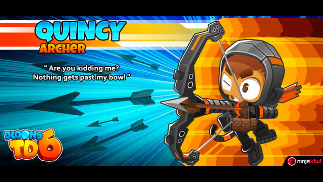
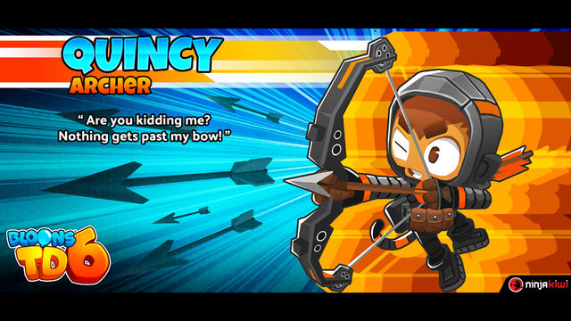

There are currently 6 heroes. Heroes are mokneys that can level up on their own or can be upgraded with money. They can reach level 20 as a max with certain points that change the heores appearence and you can only have one at a time. Each hero has 2 abilites, one unlocked at level three and the other at 10.
Quincy
Quincy uses a bow to shoot down bloons in his path. His arrows bounce twice and pierce at level 1. At level 2 his arrows can now bounce 3 time. Once at level 3 he unlocks his first ability, Rapid Fire. Rapid Fire triples his attack speed. 4:gains longer range, 5:camo detection, 6:shoots two arrows, 7:every third arrow explodes, 8:arrows do triple damage to MOAB-bloons. 9:arrows bounce 6 times, 10:unlocks Storm arrows. Storm arrows covers a large area with deadly arrows. 11:increase attack speed, 12:more popping power, 13:small increase in range, 14:arrows do quad damage to moab-class bloons. 15:Rapid Shot shoots 4x faster and cooldown is reduced, 16:increased attack speed, 17:arrows last 25% longer. 18: Storm of Arrows has shorter cooldown and 50% more arrows and faster attack speed, 19:more popping power. 20:Storm of Arrows increased damage per arrow and more arrows.
 

Gwendolin
Gwendolin believes that there isn't a problem that can't be solved with fire. Her flamethrower shots a fire ball that pierces 3 and can pop lead and frozen bloons at level 1. At level 2 her popping power is increased. and at level 3, she unlocks Cocktail of Fire. Cocktail of Fire is an ability where she hurls a flask of fire that burns bloons. 4:Heat it up-she makes a ring of fire explode from her that pops bloons and gives fire to other monkeys attacks.5:increased popping power, 6:attacks leaves burns on bloons. 7:Heat it up has increased range, 8:shoots two blasts of fire, 9:attacks pop two layers. 10:unlocks Firestorm. Firestorm sets fire to the whole screen. 11:increased attack range, 12:increased attack speed, 13:popping power greatly increased. 14:Cocktail of Fire does more damage, 15:increased attack speed. 16:Firestorm lasts longer and she can now pop purple bloons. 17:Heat it up makes monkeys pop an extra layer, 18:increaced attack speed, 19:shoots three blasts of fire. 20: Firestorm does hugely more damage.